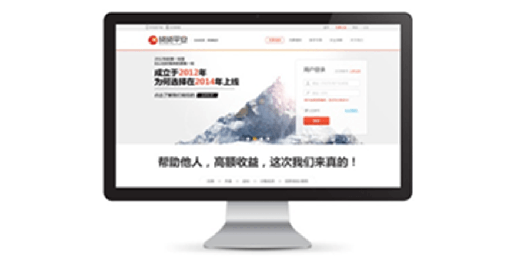

作为一种新兴金融业态，网络借贷行业在蓬勃发展的同时，也因坏账、自融、欺诈等问题饱受诟病。面对外界的质疑，深圳市贷贷平安网络信息有限公司总经理赖军认为，坚守金融谨慎原则，用互联网平等、开放的思维改造金融，实现多赢局面才是网贷行业的王道。
深圳市贷贷平安网络信息有限公司（以下简称：贷贷平安）成立于2012年10月。作为一个互联网金融服务平台，贷贷平安一直致力于为用户提供安全可靠的理财渠道，提供优质的融资解决方案。初见贷贷平安总经理赖军，他穿着朴素，嘴角总是挂着微笑，诚恳中透出坚毅和自信，开放、自由的交流态度给人留下了深刻的印象。
“贷贷平安一开始就定位于‘互联网+金融’”，赖军开门见山地说道，“这类似于小米和苹果，它们不是做硬件、做手机的公司，而是做用户、做互联网的公司。所以，我们不像传统金融，只把互联网当作渠道，而以互联网的思维做金融，从关注、服务用户出发，专注白领、工薪阶层的理财。”
据悉，贷贷平安核心成员大都来自阿里巴巴、微软、平安银行等一线互联网或金融公司，在网络技术和金融领域均拥有多年运营经验。赖军本人就曾先后供职于微软和阿里巴巴。“为什么互联网和金融人会聚集到一起，因为都希望以互联网的方式，把金融做好，这是我们的一个梦想。”他自豪地表示。
不过，在现实的工作中，金融人与互联网人之间还是不可避免地存在这样或那样的问题。 一是关注点不同。金融人首要考虑的是盈利问题。互联网人则更关注如何迅速规模化、获取用户，甚至不计成本。二是在心态上，两者也存在明显的差别。金融人更低调、谨慎，比较保守。互联网人则强调开放和平等，乐于与他人分享。
“所有的‘互联网+金融’公司都会有这样的冲突，我认为两者均有可取之处。互联网扁平式的思维拓展方式值得借鉴。而金融的谨慎原则在风控以及信息挖掘方面，也非常值得我们研究。”赖军坦言。
打造金融级安全系统
秉承金融的谨慎原则，贷贷平安在安全方面做足了功夫，耗时一年半打造金融级安全系统，为用户保驾护航。贷贷平安不仅自主研发了四重安全体系，还采用最高标准的数据加密和防护技术保障用户资金和交易数据安全。“我们不是简单地做一个网站，而是把银行的贷款五级分类风控引用到平台的架构设置里。以银行的方式细化用户的风险系数，严格管控用户贷前、贷中、贷后的风险。”赖军郑重地说道。比如，在标的形成之前，通过抓取P2P平台以及网络搜索数据，核查借款人是否存在坏账问题。又或者是让用户绑定微信、微博等社交认证账号，提高用户的违约成本。
考虑到网贷平台的安全性以及自身的风险，贷贷平安还与中国银联、平安银行展开了深度的战略合作，保证用户资金账户与支付安全。据了解，为了更好地规避平台资金池的政策风险，当下不少P2P平台的资金账号都是对私账户。但是，用户的资金流向了对私账户而非平台运营主体的账号，也加大了平台老板跑路的风险。相比之下，贷贷平安平台资金运作过程更为公开透明。平台在平安银行设立运营、居间服务和风险金三大独立的对公账户，由平安银行管理资金，规范操作并限制资金挪用。理财人资金收益拨付走银联的通道。与此同时，为了避免借款人欠账不还，贷贷平安也可通过银联系统，实现资金代扣。而且用于支付逾期垫付的风险备用金独立公开，任何人都可掌握风险备用金动向。
资金安全程度堪比银行，这在P2P网站是很少见的。在平台系统安全上如此大费周章，在外人看来似乎难以理解，但是赖军有自己的坚持。“我们要想得到用户的信任，就必须拿出自己的诚意，花钱也要做。”在他看来，信息安全关乎网贷平台的生死存亡。较早前，行业内最具影响力的网贷门户网站——网贷之家就遭受了黑客持续多日的恶意攻击，导致网站无法正常访问，给投资者及业界带来了非常大的负面影响。对此，赖军严肃地指出：“信息安全的缺失会导致全面崩盘，这是很可怕的。所以信息安全的把握很重要。”
用互联网思维改造金融
金融业是以风险控制为基础的行业，而互联网则有让所有人都有平等获取机会的能力。互联网颠覆传统金融的关键在于能否将公平自由的互联网精神践行到底。一直以来，贷贷平安都恪守自身借贷中介平台的角色，把投融资双方更恰当地连结起来。与其他P2P平台一样，投资者只需要拥有上网终端和网银，就能享受网贷理财的乐趣及收益；而不同的是，贷贷平安将更多的利润让利于用户，仅收取居间服务费等中介费用。
“很多P2P都在做一件事，那就是低息吸储，利用信息不对称，吃用户的利差。”赖军坦率地表示，这并非贷贷平安想要做的。他认为，互联网对金融业做出的最大改变，在于消除投资者的信息不对称，而这也是互联网平等、开放精神使然。“金融就是运用信息的不对称，获取利润。而互联网彻底解决了信息不对称的问题。所以，信息不对称只是暂时的，投资者早晚也会知道。余额宝就是最好的例子。”
在互联网与金融行业融合日渐深入的同时,互联网金融也正悄然改变着中国传统的金融模式，潜移默化地影响着每一个人的生活方式。赖军希望，未来贷贷平安能成为一个透明、开放、平等、安全的借贷平台。“我们希望借款人有一天也可以成为我们的投资人，就像淘宝一样，你既可以是买家，又可以是卖家。同时，当信用累积到一定程度，用户还可享有长期最低利率。”届时，将会是一个多方共赢的局面。
来源：金融家 文/王余丹